Asteroseismology with mesa
Joel Ong Courtney Crawford Lea Schimak Meng Sun
MESA School 2025
July 24, 2025
Introduction
About these Labs
We will learn about how to do asteroseismology with mesa — this is not mainly a course about asteroseismology.
We will provide some background throughout, however.
For the uninitiated, we have prepared a quick primer on it to go with the online tutorials.
We recommend further reading resources at the end of these slides.
How do we know anything?

physics of stellar interiors
quantitative
astronomy & astrophysics
Asteroseismology is our
only direct probe of
stellar interiors
(in the electromagnetic spectrum)
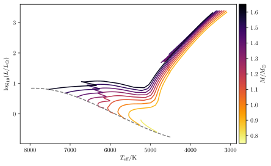
(Zero-Age) Main Sequence
(core hydrogen-burning)
Red Giant Branch
(shell hydrogen-burning)
Red Clump/Horizontal Branch \(\to\)
(core helium-burning)

(RHD simulations courtesy of Joel D. Tanner)
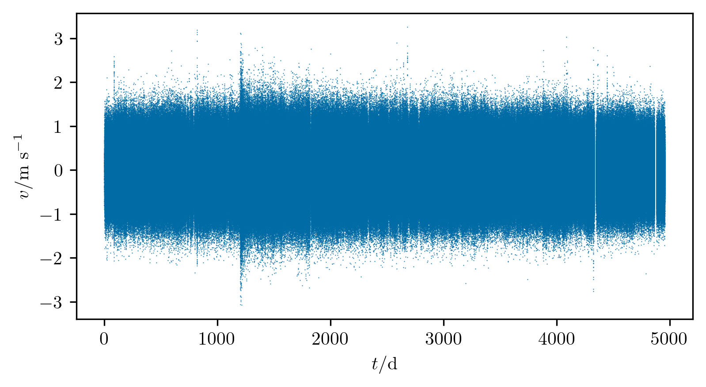
\(\ell = 0\) MDI Doppler velocities
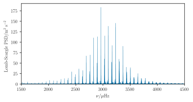
\[ \begin{aligned} {\Delta\nu} & \sim 1/t_\text{cross} \sim \sqrt{M/R^3}\\ {\nu_{\text{max}}} &\sim{g/c_s} \sim {M/R^2\sqrt{T_\text{eff}}} \end{aligned} \]
\[V_\text{osc} \sim L / M\]
Each one of these peaks
tells us the frequency of
a normal mode of oscillation (i.e. the natural
frequency of a standing wave).
These mode frequencies
are determined by
the internal structure and dynamics
of the medium in which these standing waves
propagate.
Case Study
Today, we will examine how one might calculate the mode frequencies of a rotating red giant.
- Nonrotating mode frequencies are used to constrain
the interior structure of a star. - Rotational splittings are used to constrain
radially differential rotation rates.
Lab 1
Installing GYRE
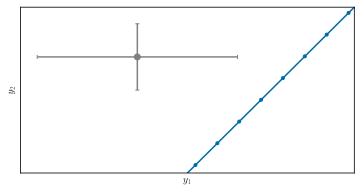
Data: \(y_\text{obs} \in Y\)
Models: \(x_i \in X\);\[F: X \to Y\]
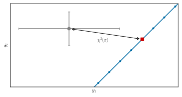
Best-fitting model: \[x = \mathop{\mathrm{argmax}}_{x_j \in X}\ \mathcal{L}\left(x_j\right)\]
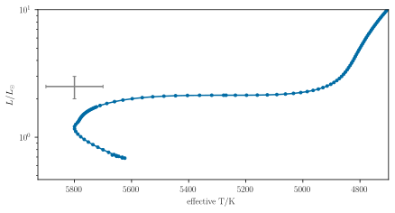
\[F: \underbrace{\left(M, t, Y_0, Z_0, \alpha_\text{mlt}, \ldots\right)}_{x \in X} \mapsto \underbrace{\left(L, T_\text{eff}, [\text{M/H}], \log g, \ldots\right)}_{y \in Y}\]

\[ \color{darkorange} \to \Delta\nu, \nu_{\text{max}}, \left\{\nu_{n,l}\right\} \]

Where to look for help
A stable release of gyre is included with mesa, but more up-to-date versions can always be found on GitHub.
I. Installation
- By default, gyre is only compiled for use as a module within mesa; however, we will be operating it in standalone mode today. Run the following commands in your shell:
Upon successful compilation, run gyre by calling it as
II. Numerical Exercise
Red Giants and
Angular Momentum Transport
- Download our mesa
inlistfiles andrun_star_extras.ffrom the Lab 1 website —
https://mesa-leuven.4d-star.org/tutorials/friday/lab-1 - Choose an initial rotation rate from the Google Sheet
- Run until the asteroseismic stopping condition is triggered.
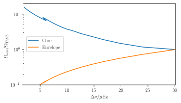
(\(\leftarrow\) proxy for age)
Radiative core contracts dramatically off main sequence
\(\implies\) core spins up (if
conserving angular momentum)
Lab 1 Wrap-Up:
Interpreting Mode Frequencies
Simple Wave Equation
\[\huge {\partial^2 \over \partial t^2}f(t, \mathbf{x}) = c_s^2 \nabla^2 f(t, \mathbf{x})\]
\[\huge -\omega^2 \hat{f}(\omega, \mathbf{k}) = -c_s^2 |\mathbf{k}|^2 \hat{f}(\omega, \mathbf{k})\]
Dispersion relation: \[\boxed{\huge \omega^2 = c_s^2 |\mathbf{k}|^2}\]
More Complicated Wave Equation
\[\huge {\partial^2 \over \partial t^2}f = \left(c_s^2 \nabla^2 - \omega^2_\text{ac}(\mathbf{x})\right) f\]
\[\huge \underbrace{-\nabla^2 f}_{\equiv k^2f} = -\left(\omega^2 - \omega^2_\text{ac}(\mathbf{x}) \over c_s^2\right) f\]
Wave propagates where \(k^2(r,
\omega) > 0\),
and decays where \(k^2(r, \omega)
< 0\).
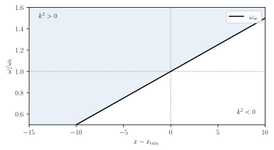
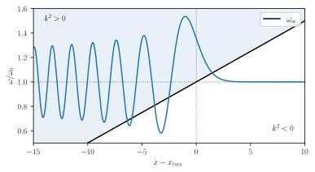
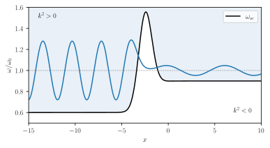
\(\left<\Omega\right>_1 = {\int_{X_1} \Omega(x) k \mathrm d x \over \int_{{X_1}} k \mathrm d x}\)
\(\left<\Omega\right>_2 = {\int_{X_2} \Omega(x) k \mathrm d x \over \int_{{X_2}} k \mathrm d x}\)
Even More Complicated Wave Equation
\[\begin{aligned}{\partial^2 \over \partial t^2} \rho \boldsymbol \xi & = {\color{blue}\nabla (\rho c_s^2\nabla \cdot \boldsymbol \xi)} + {\color{red}\nabla(\boldsymbol \xi \cdot \rho \mathbf g) - \rho \mathbf g \nabla \cdot \boldsymbol \xi} - {\color{orange}\mathbf g (\boldsymbol \xi \cdot\nabla \rho)} \\&-\color{gray}{4\pi G \rho \nabla \int {1 \over 4\pi |\mathbf x - \mathbf x'|}\nabla \cdot (\rho(\mathbf x') \boldsymbol \xi(\mathbf x'))\ \mathrm d^3 x'}.\end{aligned}\]
\[- \omega^2 \rho \boldsymbol \xi = \left({\color{blue}-c_s^2\mathbf{k k}^T} + {\color{red}i(\mathbf{k}\mathbf{g}^T - \mathbf{g}\mathbf{k}^T)} + {\color{orange}{g\over \rho}{\mathrm d \rho \over \mathrm d r} \mathbf{e_r}\mathbf{e_r}^T} - {\color{gray}{4\pi G\rho \mathbf{k k}^T\over |\mathbf{k}|^2}} \right)\rho \boldsymbol \xi\]
(full derivation in PDF notes)
Cowling’s Approximation
\[- \omega^2\begin{bmatrix}\xi_r \\ \xi_h\end{bmatrix} = \left({\color{blue}-c_s^2\mathbf{k k}^T} + {\color{red}i(\mathbf{k}\mathbf{g}^T - \mathbf{g}\mathbf{k}^T)} + {\color{orange}{g\over \rho}{\mathrm d \rho \over \mathrm d r} \mathbf{e_r}\mathbf{e_r}^T} \right)\begin{bmatrix}\xi_r \\ \xi_h\end{bmatrix}\]
\[\omega^2 \begin{bmatrix}\xi_r \\ \xi_h\end{bmatrix} = \begin{bmatrix} {\color{blue}c_s^2k_r^2} - {\color{orange}{g \over \rho} {\mathrm d \rho \over \mathrm d r}} & {\color{blue}c_s^2k_r k_h} + {\color{red} i g k_h} \\ {\color{blue}c_s^2k_r k_h} - {\color{red} i g k_h} & {\color{blue}c_s^2k_h^2}\end{bmatrix}\begin{bmatrix}\xi_r \\ \xi_h\end{bmatrix}\]
The eigenvalues \(\omega^2\) are roots of the characteristic equation
\[\begin{aligned}{\color{blue}c_s^2 k_r^2} &= \omega^2\left(1 - {{\color{blue}c_s^2 k_h^2}\over \omega^2}\right)\left(1 - {{\color{orange} N^2} \over \omega^2}\right) - \left({\color{red}c_s \over \Gamma_1 H_p}\right)^2.\end{aligned}\]
where \(N^2 = g \left({1 \over \Gamma_1 P} {\mathrm d P\over \mathrm d r} - {1 \over \rho} {\mathrm d \rho\over \mathrm d r}\right)\) — also recall that for spherical harmonics, \(k_h^2 = \ell(\ell + 1) / r^2\)
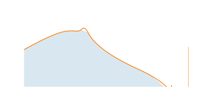
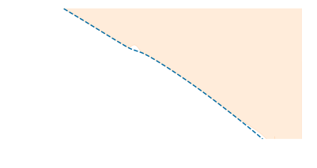
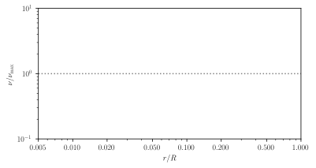
\[{c_s^2 k_r^2 \sim \omega^2 \left(1 - {{\color{blue} S_\ell}^2 \over \omega^2}\right)\left(1 - {{\color{darkorange}N}^2 \over \omega^2}\right)}\]
\[\small N^2 = {- g}\left.{\partial \log \rho \over \partial s}\right|_P{\mathrm d s \over \mathrm d r}\] entropy gradient (\(=0\) in CZ)
\[\small S_\ell^2 = c_s^2 k_h^2 = {\ell(\ell+1) c_s^2 \over r^2}\] wave angular momentum
\[\Large \omega_-^2 \sim N^2 {k_h^2 \over |\mathbf{k}|^2}; \boldsymbol \xi \sim \begin{bmatrix}k_h \\ k_r\end{bmatrix} \perp \mathbf{k}\]
\[{\color{red} \omega_g < N, S_\ell}\]
\[\Large \omega_+^2 \sim c_s^2 |\mathbf{k}|^2; \boldsymbol \xi \sim \begin{bmatrix}k_r \\ k_h\end{bmatrix} \parallel \mathbf{k}\]
\[{\color{gray} \omega_p > S_\ell, N}\]
Pressure waves (p-modes)
propagate isotropically.
p-modes:
Characteristic overtone frequency spacing \(\Delta\nu\)
Buoyancy waves (g-modes)
propagate anisotropically.
g-modes:
Characteristic overtone period spacing \(\Delta\Pi_\ell\)
Eckart-Scuflaire-Osaki Classification Scheme
p-modes:
\[\large\boxed{\nu = \Delta\nu\left(n + {\ell \over 2} + \epsilon_p\right)}\]
\[\small\Delta\nu \sim \left(2 \int {\mathrm d r \over c_s}\right)^{-1}\]
g-modes:
\[\large\boxed{{1 \over \nu} = \Delta\Pi_\ell \left(n + {\ell \over 2} + \epsilon_{g, \ell}\right)}\]
\[\small\Delta\Pi_\ell \sim {2\pi^2 \over \sqrt{\ell(\ell+1)}}\left(\int {N \over r} \mathrm d r\right)^{-1}\]
Lab 2
Calculating and Interpreting Mode
Frequencies
Operating GYRE
How does GYRE work?
Suppose we wished to find \(\lambda\) and \(\psi\) satisfying \[ \left(-{\partial^2 \over \partial x^2} + V(x)\right)\psi(x) = \lambda \psi(x). \]
Discretisation: Let \(y_i \equiv \psi(x_i)\), \(V_{ij} \equiv V(x_i)\delta_{ij}\), and \(\left(\mathbf{D}\mathbf{y}\right)_i \sim \psi'(x_i)\). \[ \boxed{\LARGE\implies\left(-\mathbf{D}^2 + \mathbf{V}\right)\mathbf{y} = \lambda \mathbf{y}.} \]
Linear Eigenvalue Problems
If \(\left(-\mathbf{D}^2 + \mathbf{V} -
\lambda \mathbb{1}\right)\mathbf{y} = 0\), then \(\lambda\) must be
a root of the characteristic function \[\Large F(\lambda) =\det\left[-\mathbf{D}^2 +
\mathbf{V} - \lambda \mathbb{1}\right].\]
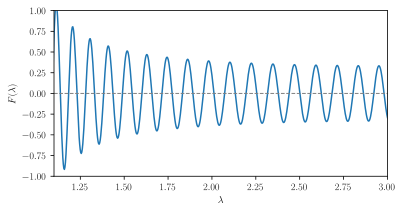
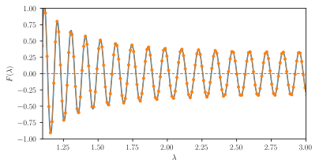
GYRE Namelists
Suppose we wished to find \(\lambda\) and \(\psi\) satisfying \[ \left(-{\partial^2 \over \partial x^2} + V(x)\right)\psi(x) = \lambda \psi(x). \]
Discretisation: Let \(y_i \equiv \psi(x_i)\), \(V_{ij} \equiv V(x_i)\delta_{ij}\), and \(\left(\mathbf{D}\mathbf{y}\right)_i \sim \psi'(x_i)\). \[ \boxed{\LARGE\implies\left(-\mathbf{D}^2 + \mathbf{V}\right)\mathbf{y} = \lambda \mathbf{y}.} \]
&model, &osc,
&mode, &constants,
&rot
&num, &grid
&scan
Operating GYRE
- Download our example
namelistfile - Modify
&modelto setfileto the stellar model of your choice:
- Run gyre as
Numerical Exercise
Mode Eigenfunctions and Propagation
Diagrams
Power spectra of MDI dopplergrams
\[ \begin{aligned} {\Delta\nu_\odot} &\sim 135\ \mathrm{\mu Hz} \\ {\nu_{\text{max},\odot}} &\sim 3090\ \mathrm{\mu Hz} \end{aligned} \]
(roughly 5-minute oscillations)
p-mode frequencies satisfy \(\nu_{n\ell} \sim \Delta\nu\left(n + {\ell \over 2} + \epsilon_\ell(\nu)\right) + \mathcal{O}(1/\nu)\)
Stochastic,
broad-band
excitation
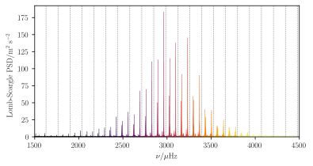
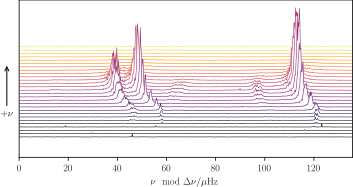
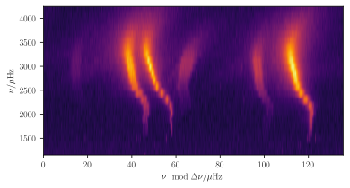
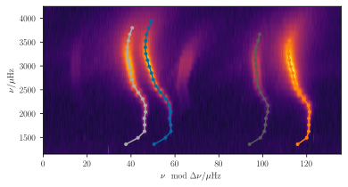
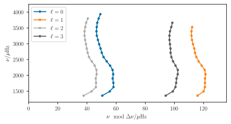
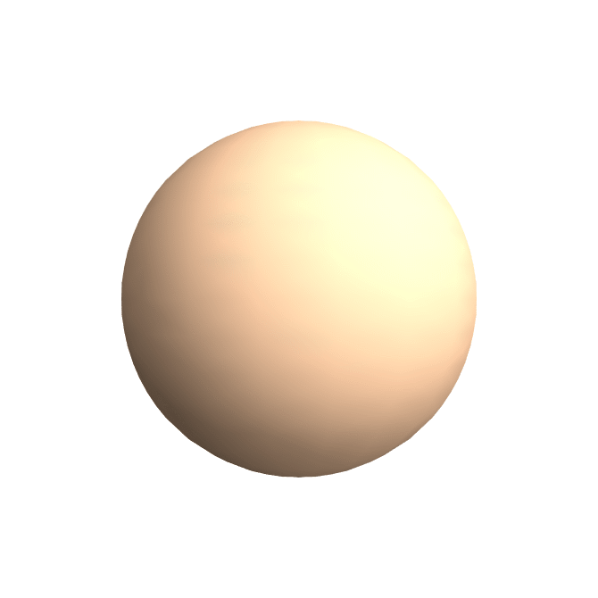
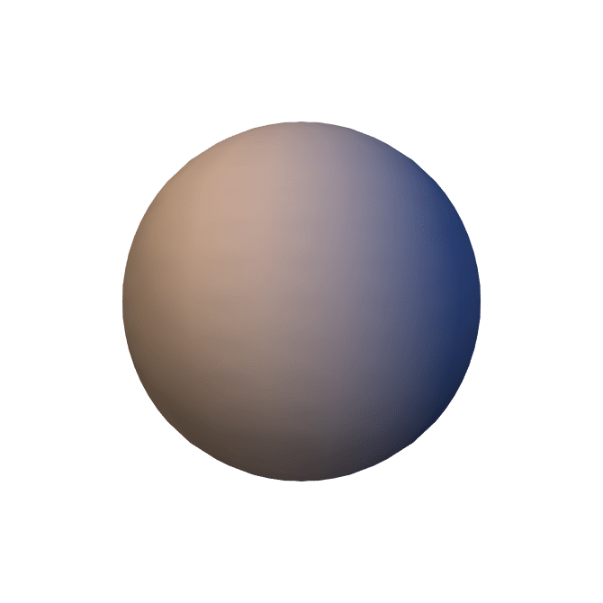
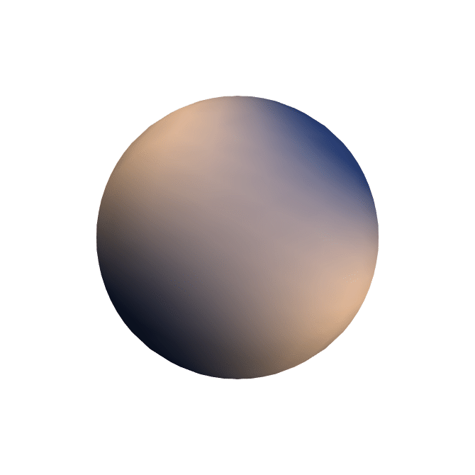
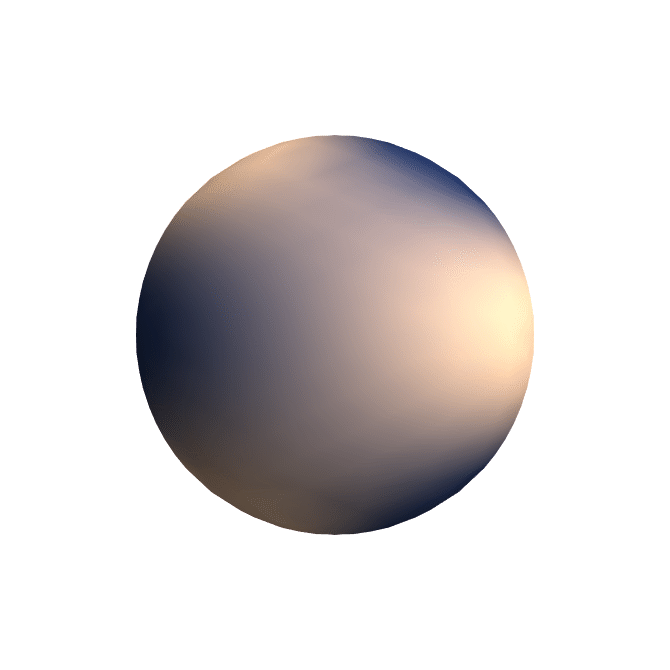
- Using the evolutionary track you made earlier, pick a value of \(\nu_\text{max}\) from the Google Sheet.
- Using the provided colab notebook, construct échelle and propagation diagrams for these models.
Lab 2 Wrap-Up
What’s going on??
\[\begin{array}{c} {\scriptsize\text{Power}}\\ \big\uparrow \end{array}\]
\[\longrightarrow {\scriptsize\text{Frequency}}\]
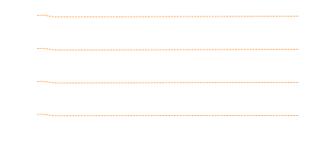
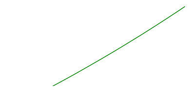

(proxy for age \(\to\))
Mixed modes exhibit
avoided crossings
between underlying p- and
g-modes.
Lab 3
Mode Frequencies and
Rotation
Rotation in GYRE: the &rot namelist
- gyre allows you to specify a solid-body
rotation rate in
&rot. However, if your stellar models are rotating, these rotation rates can be used instead:
- Today, we will be computing frequencies using
the
Traditional Approximation for Rotation,
~Spherical Stars \(\implies\) Spherical Harmonics
Three quantum numbers \(n, l, m\): \[ \begin{aligned} \ell &= 0, 1, 2, \ldots \\ m &= -\ell, -\ell+1, \ldots, \ell-1, \ell \end{aligned} \]
Zonal (\(m = 0\))
Prograde sectoral
(\(m = +\ell\))
Retrograde sectoral
(\(m = -\ell\))
Changes of Reference Frame
\[\begin{array}{c} {\scriptsize\text{Power}}\\ \big\uparrow \end{array}\]
\[\longrightarrow {\scriptsize\text{Frequency}}\]
Other Complications
- What physics is this description missing?
- What happens with mixed modes?
- How do we compute these other effects?
The Coriolis Force
An extra term appears in the momentum equation going as \[ {\mathrm D \mathbf v \over \mathrm d t} = \text{(other terms)} + \boxed{\boldsymbol \Omega \times \mathbf{v}}. \] We may account for how this changes the mode frequencies by
- Using perturbation theory (discussed later), or
- Modifying the pulsation boundary value problem.
The Traditional Approximation for Rotation
We replace \(\boldsymbol \Omega = \Omega \mathbf{e_z} \to (\boldsymbol \Omega \cdot \mathbf{e}_r) \mathbf{e}_r = \Omega \cos \theta \mathbf{e_r}\). This causes the pulsation problem to remain amenable to separation of variables.
Recall: this means solutions are of the general form, e.g.,
\(P(r, \theta, \varphi) = \tilde{P}(r)
\Theta(\theta) \Phi(\varphi)\).
By azimuthal symmetry, \(\Phi(\varphi) = e^{\mathrm{i} m \varphi}\) for integer \(m\).
Laplace’s Tidal Equation
Without rotation, the solution in the latitude coordinate, \(\Theta\), satisfies \[{\mathrm d \over \mathrm d \mu} \left({1 - \mu^2} {\mathrm d \over \mathrm d \mu} \Theta\right) - {m^2 \over (1 - \mu^2)} \Theta = \lambda \Theta.\]
This is Laplace’s equation with eigenvalues \(\lambda = \ell (\ell + 1)\) for integers \(\ell\).
With rotation, this becomes Laplace’s tidal equation: \[\left[{\mathrm d \over \mathrm d \mu} \left({1 - \mu^2 \over 1 - q^2 \mu^2} {\mathrm d \over \mathrm d \mu}\right) - {m^2 \over (1 - \mu^2)(1 - q^2 \mu^2)} + {m q (1 + q^2 \mu^2) \over (1 - q^2 \mu^2)^2}\right] \Theta = \lambda \Theta,\] with the spin parameter \(q = 2\Omega/\omega\).
Solutions are given by the Associated Legendre Polynomials, \(P_\ell^m(\cos \theta).\)
Solutions are given by the
Hough Functions, \(H_\ell^m(\cos
\theta, q).\)
How do the mode frequencies change?
p-modes:
\[\large\boxed{\nu = \Delta\nu\left(n + {\ell \over 2} + \epsilon_p\right)}\]
\[\small\Delta\nu \sim \left(2 \int {\mathrm d r \over c_s}\right)^{-1}\]
g-modes:
\[\large\boxed{{1 \over \nu} = \Delta\Pi_\ell \left(n + {\ell \over 2} + \epsilon_{g, \ell}\right)}\]
\[\small\Delta\Pi_\ell \sim {2\pi^2 \over \sqrt{\ell(\ell+1)}}\left(\int {N \over r} \mathrm d r\right)^{-1}\]
What about mixed modes?
Numerical Exercise
Rotational Avoided Crossings in Red
Giants
Lab 3 Wrap-Up
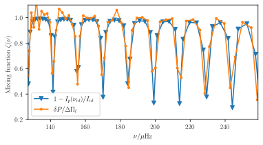
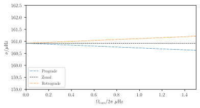
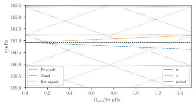

Mode mixing yields avoided crossings
between multiplet components of identical \(m\)
(cf. Mosser+ 2012, Ouazzani+ 2013, Deheuvels+ 2017)
Bonus Exercise
Sensitivity Kernels
Mode inertia \(I = \int r^2 \rho_0 \left(\xi_r^2 + \ell(\ell + 1) \xi_t^2\right) \mathrm d r.\)
For rotation in particular, \[\delta\omega \sim m \beta \int K(r)\Omega(r)\ \mathrm d r;\] \[\beta K(r) = {r^2 \rho_0 \over I} \left(\xi_r^2 + [\ell(\ell+1) - 1] \xi_t^2 - 2\xi_r \xi_t\right)\] (with \(K(r)\) normalised to unit integral)
Recommended Reading
Books

47. session de l’Ecole d’Eté de Physique Théorique: Astrophysical fluid dynamics - Les Houches 1987, p. 399 - 560
University of Tokyo Press, 1989, 2nd ed.
Online
- Aerts, Christensen-Dalsgaard, Kurtz:
Asteroseismology. ISBN 978-1-4020-5178-4 - Jørgen Christensen-Dalsgaard:
Lecture Notes on Stellar Oscillations